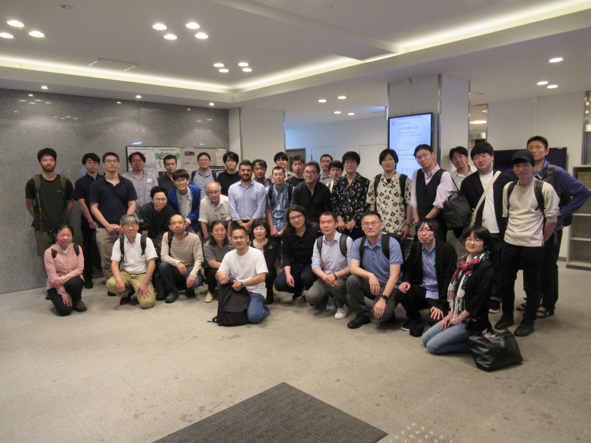

Date
June 9 (Mon) PM – June 11 (Wed) AM, 2025
Venue (In-person only)
Room 111, Research Institute for Mathematical Sciences (RIMS), Kyoto University
RIMS website
Speakers
- Chao Li (New York University)
- Chao Xia (Xiamen University)
- Giovanni Catino (Politecnico di Milano)
- Reiko Miyaoka (Tohoku University)
- Shin Nayatani (Nagoya University)
- Shin-ichi Ohta (Osaka University)
- Shintaro Akamine (Nihon University)
- Shota Hamanaka (Osaka University)
- Tatsuya Miura (Kyoto University)
- Xiaoli Han (Tsinghua University)
- Yuanlin Peng (Tohoku University)
参加登録（受付終了）
国内からの参加者（講演者を含む）は、以下のフォームより事前登録をお願いいたします。登録期限は2025年5月7日（水）です。期限後も会場に余裕がある限り参加を受け付けます。また、事前登録なしでもご参加いただけます。なお、旅費援助の募集は予算上限に達したため終了しました。海外からの講演者は登録不要です。
参加登録フォーム（受付終了）
懇親会（終了）
2025年6月10日（火）18:30～ ／ 浜町 ／ 会費6,000円（5,800円のコースを予定）
Program
Program (PDF)Abstracts (PDF)
June 9 (Mon)
13:00–14:00
Shin-ichi Ohta (Osaka University)Splitting theorems for weighted Finsler spacetimes
14:20–15:20
Tatsuya Miura (Kyoto University)A new energy method for shortening infinite-length curves
15:40–16:40
Xiaoli Han (Tsinghua University)The deformed Hermitian Yang-Mills equation
June 10 (Tue)
9:30–10:30
Yuanlin Peng (Tohoku University)Applications of entire Green functions on RCD(0, N) spaces
10:50–11:50
Shota Hamanaka (Osaka University)Applications of µ-bubbles to studying GRS
13:20–14:20
Chao Xia (Xiamen University)Various Heintze-Karcher-type inequalities and applications
14:40–15:40
Chao Li (New York University)The stable Bernstein theorem for minimal hypersurfaces
16:00–17:00
Giovanni Catino (Politecnico di Milano)Stable minimal hypersurfaces via conformal method and applications
June 11 (Wed)
9:00–10:00
Shintaro Akamine (Nihon University)Bernstein type theorem for constant mean curvature surfaces in isotropic 3-space
10:20–11:20
Shin Nayatani (Nagoya University)First-eigenvalue maximization and inflation of maps
11:40–12:40
Reiko Miyaoka (Tohoku University)Chern’s conjecture in the Dupin case
Photo

Group photo (June 2025)
Proceedings
RIMS Kôkyûroku, No. 2335: Extrinsic Geometric Analysis
Financial Support
- 日本学術振興会 科学研究費助成事業 基盤研究（A）、25H00586（本多正平）
- 日本学術振興会 科学研究費助成事業 基盤研究（C）、23K03105（國川慶太）
- 日本学術振興会 科学研究費助成事業 若手研究、23K12967（櫻井陽平）
Organizers
- Keita Kunikawa (Tokushima University)
- Yohei Sakurai (Saitama University)
トップに戻る